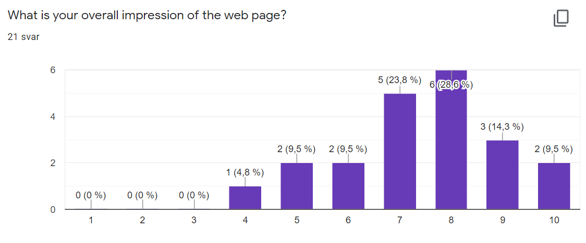
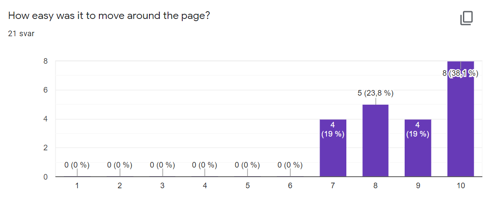

Testing Document
To receive feedback as easily as possible, Cathrine put together a Google Form linked here - however the form was edited and re-sent to our testers after some tweaks based on feedback from the first pass.
To gauge the demografic, we asked for their age-range and profession (student or working, IT/tech or something else), and device and browser information. We then wanted 1-10 metrics of: overall impression, design, and navigability. Beyond that, we ask for input for possible improvements and other general comments.
Note: some of the numbers in the graphs below are inconsisted/illogical due to formatting reasons (when combining the results from both versions, ask Google); both versions of the form was sent to the same people, and the rations should remain descriptive.
Tester Audience


As you can tell from the graphs, the forms were mostly sent out to fellow students and thus landed mostly within the target demographic for Kråkeluren - sidenote, the one working in IT is also an IT-lector student. Not all of these are science lector students/Spanskrøret members, though this should not be a huge factor to the feedback's relevance.
Tester Platforms


While Chrome was clearly the primary testing browser (purely by coincidence), there was a couple live tests on Safari on mobile/iOS. In addition to the form responses from tablets and computer browsers as seen above, there were a couple live tests on mobile on Chrome. The mobile tests were instrumental to iron out responsivity issues for small screens - which was one of the primary changes between the two versions of the form that were sent out.
Feedback Summary + Response
- Lots of positive response on the Kråkestyre, songlist, gallery and blog pages, as well as some critiques:
- The carousel in gallery rotated too quickly: modified after feedback.
- For various of these sites, there were comments about boxes not lining up horizontally, which is a fair critiue. As a result, some boxes were expanded to form an even layout (in blog and shop, blog and gallery remained as "organic" as initially planned with the client).
- One pointed out how, in the songlist, different lyrics/columns have different widths. This is difficult to do much with, considering we wanted consistently readable center-alignment, accomodating for different lyric line-lengths. It's a very fair critique though (for instance 1.2. Nu Klinger has some very long lines).
- Several people commented that the colour scheme could use more variation, while other remarked that it fit in with Kråkeluren, but could use more contrast (eg. darker greys, which is a very good idea). Very fair point, it's extremely grey, and implementing some of Spanskrøret's green could have fit in neatly.
- One suggested more font variation. Fair point! We decided initially to replicate Spanskrøret's website on that front, so nothing's changed, but it's still a very valid point.
- The (most likely) biggest feedback topic was the navigation bar; people seem to love it, but it had issues with repsonsivity for smaller screens. This was the top prioritized change between the two forms, and the bar was developed a lot since then to be far more compatible (and more aesthetically pleasing)!
- We got a suggestion to make a simple "shopping cart" for the Kråkeshop (rather than "purchasing info/contact") - which we implemented as a result. After implementing this we got comments that it was organized and easy to use.
- Some comments about styling here and there, mostly regarding whitespace (or initial lack thereof) and widths of elements such as the large images or contact form - pretty much all of these were adjusted respectively.
- We got a few comments that the navbar should "blend" with the large images. The navbar is a bit slower to expand than the scroll when you scroll up (because of the animation), so the user can see the white margin above the full width images. This is definitely something that would be nice to avoid, but without the margin over the images they would crop too much, so we have not found another way around this.
- Other than that, we also got the following general ratings:


Self-reflection
- From Joakim:
Firstly I think the project went very well all-in-all. I'm very grateful we got ahold of Ferdinand as a client (by pure luck, over a conversation at one of Kråkeluren's meetings), as it instantly defined a "direction" for the project. Plus it meant the actual content we had to implement was all there, from their existing platforms (though they've never had their own site before!) and other info we'd receive from Ferdinand directly. I think all that was instrumental in making the project purpose and direction collectively well-defined and uniform to all of us. And besides, they've been super nice to work with!
Secondly I feel like I've learned firmly how to go about with HTML, CSS and JS (which feels great!). I already knew a fair bit of programming though I've never touched JavaScript, but I feel like I quickly got a grasp of the syntax and general problem-solving with it. I guess the real personal take-away from the project itself has been the work related to coordinating different branches of a project (as the only actual Kråke in our group), and why it's important to get right. There are a lot of things I think could've went better, or be perfected/optimized further, but it's been a very good learning experience!
- From Martin:
The project was pretty fun! I'm firstly happy to have a team that were all friendly and fun to work with! The amount of experience each and everyone had was also very comforting, and it was great to see how everyone had their way of doing something. It was also really cool to have an actual client, so I got a sense of pride and accomplishment whenever I did something. I think the fact that there was an actual client instead of someone imaginary put me in a different mindset, which also resulted in me tinkering with just about everything and all the small bits that probably wasnt neccessary, but that I still wanted to do.
As of what I've learned this semester, it was great to brush up on some of my old skills, as its been a couple years since I've had any real, big projects to work on. It was really fun, I miss staying up till 3am coding and trying to problem solve stuff, just to end up with some spaghetti code that finally worked. (The nav-bar was a big pain in the butt, I probably spent way more time on it than I should've).
- From Cathrine:
I really enjoyed working on the project! Even though I have coded in JavaScript, HTML and CSS before, I have never worked on a project this big and detailed. I feel like I learned a lot from planning the website instead of starting to code right away, which is what I have been doing in the past. So not only have I improved my coding skills a lot, but I have learned how to properly approach a project like this. I also really appreciated working with my group and I enjoyed the teamwork a lot, it was fun help eachother, discuss problems and work things out with the group. Even though we ran into several problems on the way it was fun to figure out what went wrong, and I probably leaned the most trying to fix stuff. Our client was also very nice to work with and I enjoyed being able to work on an actual website that is to be used by someone. In general I think we did well on the project, it was very fun (sometimes frustrating), and I have learned a lot!
- From Henning:
This project has been great! I was very happy that we had a concrete plan from the get-go and could get a feel for the theme of website immediately. I had some experience with HTML, but styling was not a big part of it. Learning how to use flexboxes and more CSS is a big improvement to what i already knew. I am also really happy that i got to work on the calendar. The calendar is mostly created using javascript, and since i have some coding experience it wasn't too tricky. It was still a challenge and there is a lot i want to do to improve it, but as it is now it works pretty well. This has been my first time working on a coding project with more people, but i'm glad it was with this group. When problems arose, we could quickly figure them out. I have learned a lot from this project, so making a dynamic website should be a lot easier in the future.
- From Adrian:
This has been a great experience to go through. To create a website from scratch is really enjoyable. Especially seeing how it evolves over time, adding more and more attributes to it.
The best part must be the teamwork we've had since start. To hear so many great/creative solutions from your co-students is not only a great learning experience, but also in fact inspiring to dive deeper into the coding world.
The most challenging part must have been working on the presentation of the board members in about_styret.html. At first I wanted to make the user able to click on the board member so it would pop up and you could read something about them. This got very complicated and we ended up scratching it. A good call.
All in all, this has honestly been a lot of fun